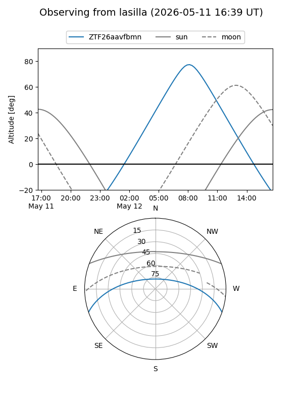
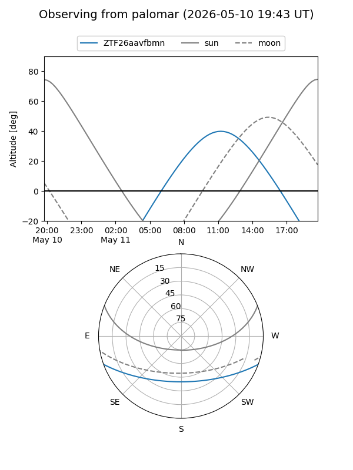

ZTF26aavfbmn
Target ZTF26aavfbmn at 2026-05-11 11:24
Aliases and brokers:
FINK: link
Lasair: link
ALeRCE: link
alt names
ZTF26aavfbmn (ztf,fink_ztf)
Coordinates:
equatorial (ra, dec) = 280.4264,-16.74742
equatorial (HMS+DMS) = 18:41:42.35,-16:44:50.71
galactic (l, b) = (16.8958,-5.46365)
Flags:
Photometry:
last ztfg=17.07
2 ztfg detections
Lightcurve
Visibility


Additional plots